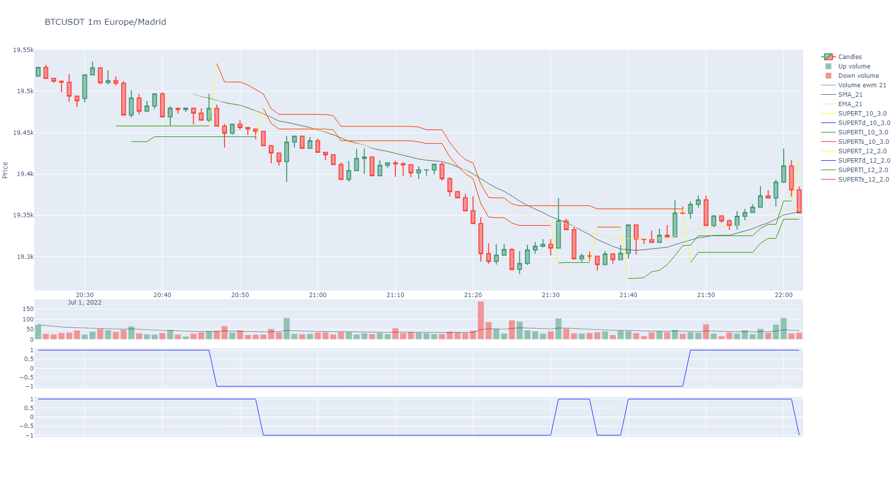

Welcome to BinPan’s documentation!¶
BinPan is a Python wrapper for Binance API. Useful creating objects with many capabilities in data analysis.
BinPan can show plots easily and fetch API requests into the same object. It can also obtain some technical indicators.
The target of this module is to have a fast tool for collecting and handling data from the Binance API easily.
It is intended to be useful in Jupyter Notebooks or even the python console, but it can be used in many other ways.
BinPan manages symbol objects that can do:
get candles with time zone and indexing options.
get trades.
calculate technical indicators.
plot candles, histograms, indicators, etc in a very simple and beautiful way.
check applied fees.
review Exchange policies.
An example of a plot for candles and indicators:
{kind=link}
Note
BinPan contains no Binance order method, withdraw method or any dangerous command.
If you decide to add API keys for using some account methods, BinPan will encrypt it in a file, and in memory, but it is better not enabling trading capability on the Binance API key configuration, just for your own peace of mind.
You will be asked for the API key and secret the first time you need it. It will be encrypted and stored in a file.
Be careful out there!
Hope you find it useful breaking the market!!!
Documentation¶
Full documentation can be found at:
https://nand0san.github.io/binpan_studio/
Take a look to the basic tutorial. Find it in the Jupyter Notebook file tutorial.ipynb
There are many more tutorials in Jupyter Notebooks at https://github.com/nand0san/binpan_studio
Hope you find it useful breaking the market!!!
Google Colab¶
Google Colab is not available for the Binance API. Maybe Colab’s IPs are restricted in the Binance servers.
BinanceAPIException: APIError(code=0): Service unavailable from a restricted location according to 'b. Eligibility' in https://www.binance.com/en/terms. Please contact customer service if you believe you received this message in error.
GitHub repo¶
Installation¶
Pypi repository: https://pypi.org/project/binpan/
pip install binpan
Any API key or secret will be prompted when needed and encrypted in a file.
Usage¶
There is a tutorial in a Jupyter Notebook file in the github repo.
https://github.com/nand0san/binpan_studio/blob/main/basic%20tutorial.ipynb
Importing just like this:
import binpan
btcusdt = binpan.Symbol(symbol='btcusdt',
tick_interval='15m',
time_zone='Europe/Madrid',
end_time='2021-10-31 03:00:00')
btcusdt.sma(21)
btcusdt.plot()
{kind=link}
Jupyter Import Problems Troubleshooting¶
When working with Jupyter, you may encounter import errors while trying to import packages such as BinPan. These errors can be caused by various reasons such as package installation order, virtual environment issues, etc. To resolve such errors, you can try installing the required modules directly to the Jupyter Notebook kernel by following the steps below:
First, import the sys module in your Jupyter notebook.
Next, install the required packages using the following command:
import sys !{sys.executable} -m pip install <package_name>
Replace <package_name> with the name of the package that you want to install.
By following these steps, you can install the required packages directly to the Jupyter Notebook kernel and resolve any import errors that you may encounter. In addition, it is recommended to ensure that the virtual environment used by Jupyter is configured correctly to avoid any conflicts with package installations.
Greetings¶
I would like to express my gratitude to the pandas_ta team for developing such a fantastic library. Thank you for your hard work and dedication in creating a powerful tool that enables data analysts and traders to perform technical analysis in Python with ease. Your contribution to the Python community is greatly appreciated.
Contents:
- BinPan Module
- Aggregations Module
- Exceptions Module
- Exchange Module
- Files Module
- Indicators Module
- Influx Manager Module
- Market Module
- Messages Module
- Plotting Module
- PostgreSQL Module
- Requests Module
- Redis Module
- Statistical Tests and Tools
- Starters Module
- Strategies Module
- Tags & Backtesting Module
- Time Helpers
- Wallet Module